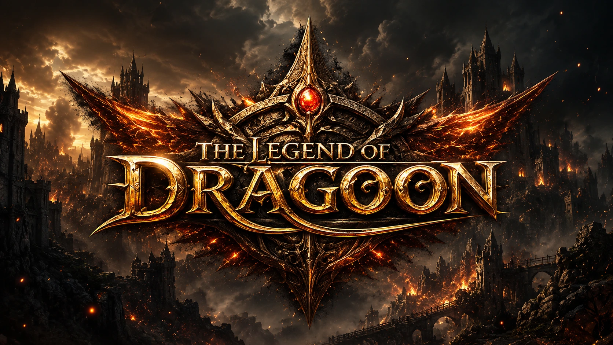
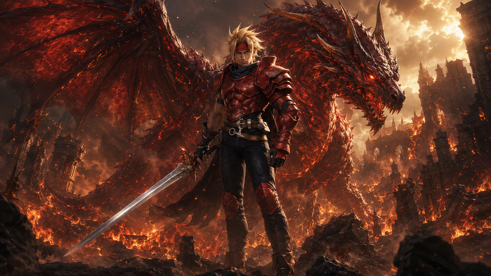
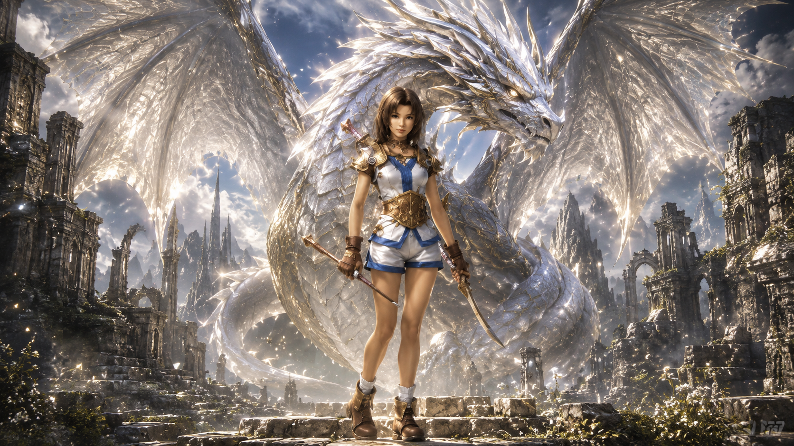
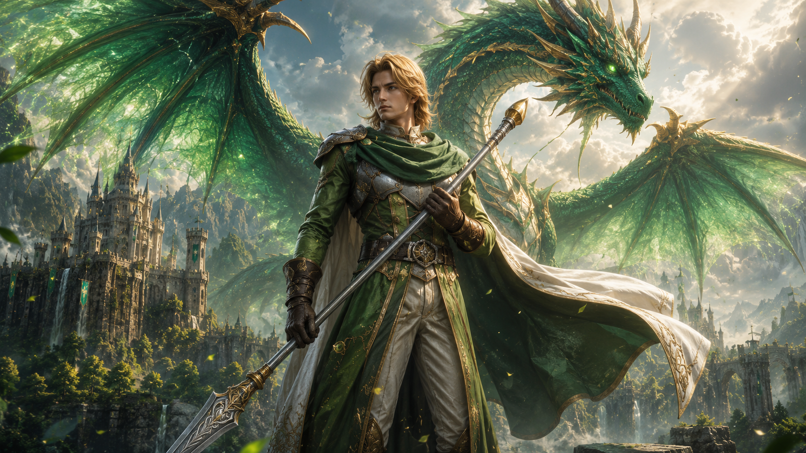
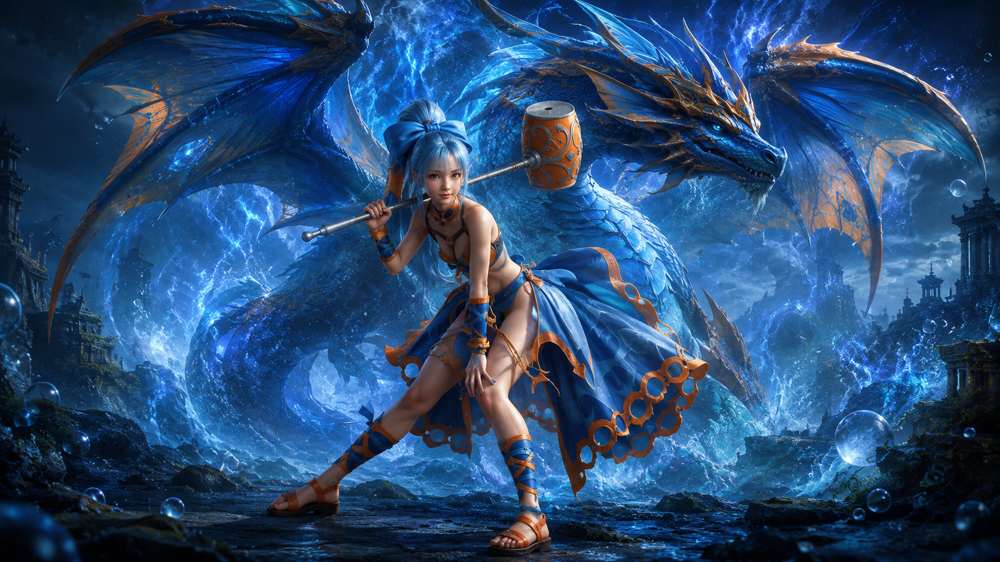
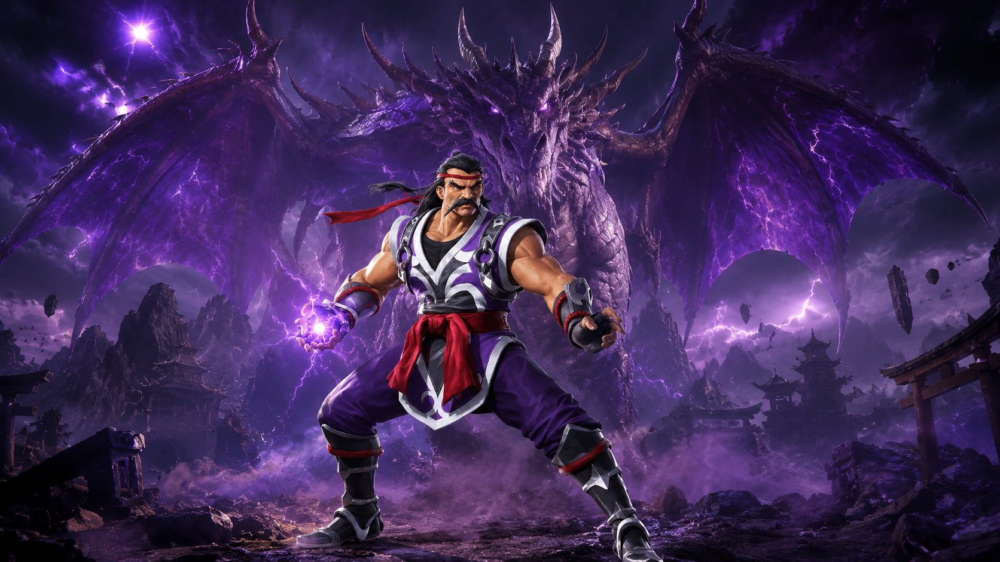
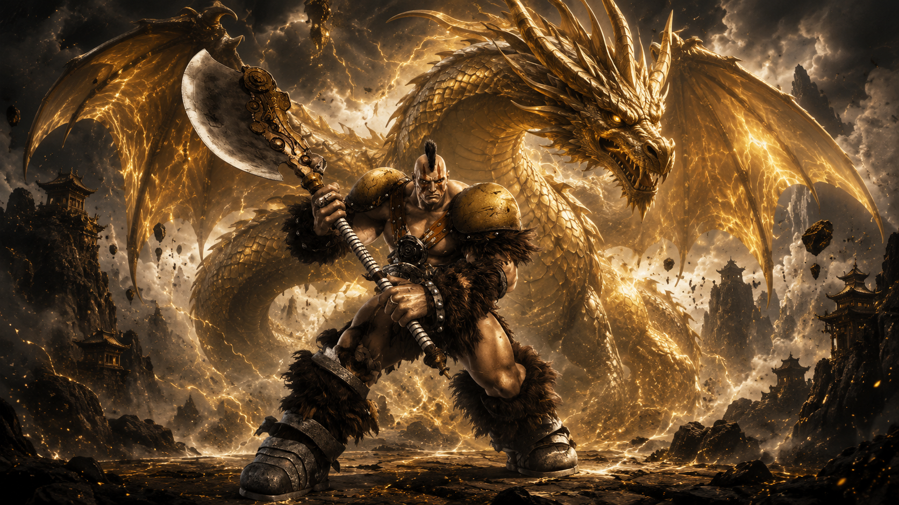
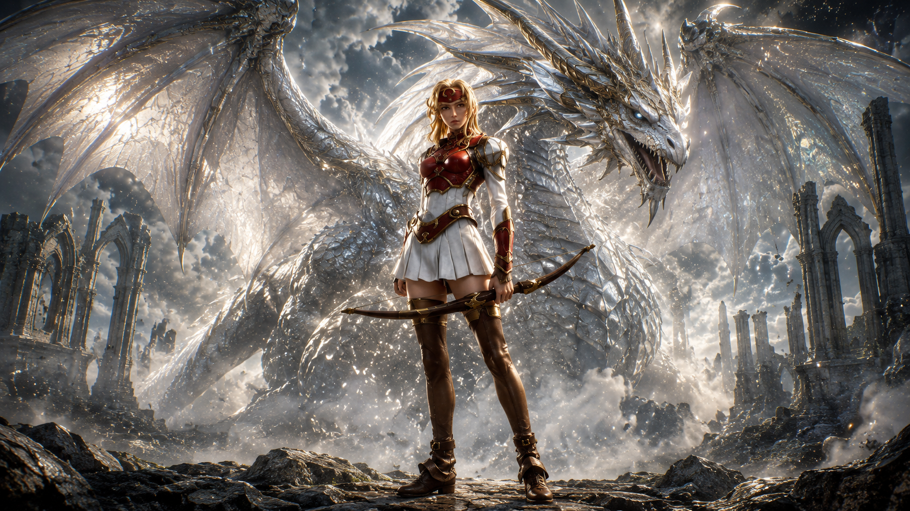
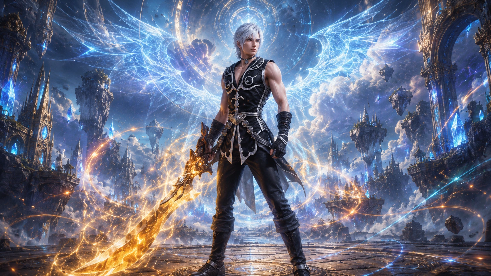

Bem-vindo ao Mundo de Dragoon
"The Legend of Dragoon" é um RPG desenvolvido pela Japan Studio e lançado para o PlayStation em 1999. Ele é bastante querido por muitos fãs de RPGs clássicos devido à sua história envolvente, sistema de combate baseado em "Addition" e visuais impressionantes para a época.
Dart Feld
Dart é o protagonista, um jovem guerreiro cuja aldeia, Neet, é destruída pelo Império de Sandora, e sua amiga de infância, Shana, é sequestrada. Ele busca vingança e justiça, descobrindo ao longo do caminho que tem uma conexão profunda com os dragões.
Shana
Shana é a amiga de infância de Dart e é sequestrada pelo Império de Sandora no início do jogo. Ao longo da história, revela-se que ela tem um papel crucial devido ao seu vínculo com os dragões e sua conexão com o passado de Dart.
Rose
Rose é uma guerreira misteriosa com um passado trágico e uma forte conexão com os dragões. Ela se junta a Dart e seu grupo, revelando seu profundo conhecimento sobre a história dos dragões e os eventos que moldam o mundo.
Albert
Albert é o príncipe do reino de Basil, que se junta ao grupo de Dart após um ataque ao seu reino. Ele busca restaurar a paz em seu reino e combater as forças que ameaçam o mundo.
Meru
Meru é uma jovem guerreira enérgica que se junta ao grupo após um ataque ao seu vilarejo. Ela busca justiça e aventura, trazendo uma energia positiva para o grupo.
Haschel
Haschel é um velho guerreiro e pai de Meru. Ele busca vingança pela morte de sua esposa e se junta a Dart para alcançar seus objetivos pessoais e ajudar na luta contra as forças malignas.
Kongol
Kongol é um gigante da tribo do Povo dos Gigantes que se une ao grupo após uma série de eventos que revelam seu passado e sua conexão com o enredo principal. Ele busca resolver questões relacionadas ao seu povo e encontrar seu lugar no mundo.
Miranda
Miranda tem uma aparência distinta com cabelo longo e roupas elegantes. Ela é uma personagem marcante com um visual sofisticado.
Lloyd
Lloyd é um dos principais vilões do jogo. É um guerreiro habilidoso que busca reunir todos os Dragoon Spirits para criar um novo mundo. Embora inicialmente pareça ser um antagonista, suas verdadeiras motivações são mais complexas.
Zieg Feld
Zieg Feld é o pai de Dart e um dos maiores heróis da Guerra dos Dragões. No entanto, Zieg foi corrompido pelo poder de Melbu Frahma e se tornou um dos principais antagonistas do jogo. Ele é um personagem trágico, cuja vida foi manipulada e destruída pelo poder do Dragão.